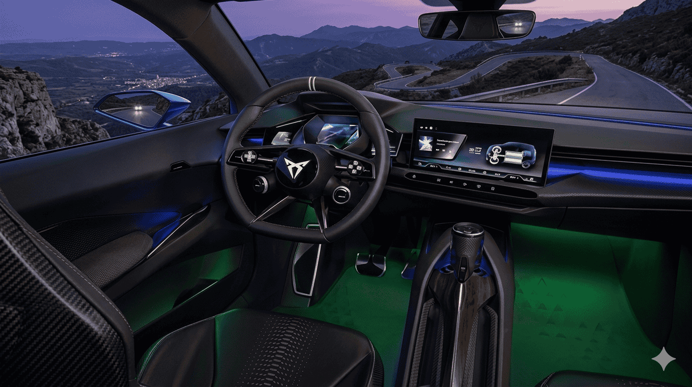

Tengo que confesar que llevaba meses esperando poder escribir este artículo. Desde que CUPRA empezó a filtrar detalles del Raval, tuve la intuición de que estábamos ante algo importante. No por las cifras en sí mismas —que son muy buenas—, sino por lo que este coche representa en el contexto del mercado eléctrico europeo y, especialmente, del español.
Porque si hay un argumento que se repite constantemente cuando hablamos de la paradoja del coche eléctrico en España, es el precio. "Es que son muy caros", oímos una y otra vez. Y hasta ahora, era difícil rebatir ese argumento con datos. Pero el Raval puede cambiar eso. Vamos a ver cómo.
El contexto: por qué el Raval es más que un coche
El CUPRA Raval no es un coche más en el catálogo de un fabricante. Es el vehículo sobre el que pivota el futuro industrial de SEAT S.A. y, por extensión, una parte significativa del sector automovilístico español.
Según la propia compañía, el Raval es el modelo con el que CUPRA quiere "democratizar el coche eléctrico", haciéndolo accesible a un público mucho más amplio del que hasta ahora podía permitirse un eléctrico (fuente: SEAT-CUPRA Media Center).
Pero va más allá del producto. El Raval es el primer vehículo eléctrico urbano fabricado en la planta de Martorell (Barcelona), una factoría que hasta ahora producía modelos de combustión y que ha tenido que transformarse completamente para poder ensamblar este coche. Es parte del ecosistema de movilidad eléctrica que el Grupo Volkswagen está construyendo en España, que incluye la gigafactoría de baterías de PowerCo en Sagunto (Valencia) (fuente: SEAT-CUPRA Media Center).
🇪🇸 Lo que el Raval significa para España:
- • Primer eléctrico urbano producido en Martorell
- • Parte del plan de electrificación del Grupo Volkswagen en la Península Ibérica
- • Conectado con la gigafactoría de baterías de Sagunto (Valencia)
- • Miles de empleos directos e indirectos en la cadena de valor
- • Refuerza la posición de España como hub europeo de electromovilidad
Diseño: deportivo, compacto y con carácter
Con aproximadamente 4,04 metros de longitud, el Raval se sitúa en el segmento B, el de los urbanos. Tiene el tamaño de un SEAT Ibiza, pero con un enfoque estético completamente diferente: líneas más agresivas, formas más angulosas y esa actitud deportiva que caracteriza a todos los modelos CUPRA (fuente: km77).
Lo que me parece acertado del diseño del Raval es que CUPRA no ha intentado hacer un "coche eléctrico que parece eléctrico". No hay líneas excesivamente futuristas ni estéticas que asusten al comprador tradicional. Es un coche compacto pero con presencia, con un diseño que transmite dinamismo sin resultar extravagante. Según Autonoción, el enfoque es "deportivo y emocional", algo que diferencia al Raval de otros eléctricos urbanos más asépticos.
Motor.es lo describe como un coche con el tamaño de un Ibiza pero con un espacio interior cercano al de un compacto, gracias al aprovechamiento de la plataforma eléctrica y la batalla optimizada.
Plataforma y tecnología: la base del Grupo Volkswagen
El Raval se construye sobre la plataforma MEB Entry (también referida como MEB+ en su evolución más reciente) del Grupo Volkswagen. Es una versión optimizada de la conocida plataforma MEB, diseñada específicamente para coches eléctricos pequeños y asequibles. La misma base servirá para futuros modelos como el Volkswagen ID.2 o el ID.Polo (fuente: Híbridos y Eléctricos).
Características de la plataforma:
- Tracción delantera: Configuración que prioriza eficiencia y espacio interior
- Arquitectura optimizada: Diseñada para reducir costes de producción sin sacrificar prestaciones
- Batería en el suelo: Permite un centro de gravedad bajo para mejor comportamiento dinámico
- Preparada para actualizaciones OTA: El software se puede actualizar de forma remota
Que el Raval comparta plataforma con futuros Volkswagen no es una debilidad, sino una fortaleza: las economías de escala permiten abaratar costes y ofrecer un precio competitivo, mientras que CUPRA aporta su propia personalidad a través del diseño, la puesta a punto y el equipamiento.
Autonomía, batería y carga rápida
Aquí es donde el Raval empieza a poner sobre la mesa cifras que, para un urbano de 4 metros, son realmente impresionantes.
🔋 Autonomía y batería del CUPRA Raval:
- Autonomía máxima: Hasta 450 km WLTP (versiones Dynamic / Dynamic Plus)
- Autonomía versión VZ: ~400 km WLTP
- Batería estimada: ~56 kWh
- Carga rápida DC: 10% → 80% en aproximadamente 20 minutos
Fuentes: CUPRA oficial, Autopista
450 km WLTP en un urbano de 4 metros. Quiero detenerme en este dato un momento. Hace tres años, 450 km era la autonomía de un SUV eléctrico de gama media que costaba el doble. Que un coche urbano de 26.000 euros ofrezca esa cifra indica hasta qué punto ha avanzado la tecnología de baterías y la eficiencia de los trenes motrices eléctricos.
En condiciones reales de uso —ciudad, carretera mixta, climatización encendida—, la autonomía se situaría probablemente entre 350 y 400 km, lo cual sigue siendo más que suficiente para cubrir varios días de desplazamientos urbanos normales sin cargar, e incluso para viajes de fin de semana con una sola parada de carga.
Y hablando de carga: del 10% al 80% en unos 20 minutos es una cifra excelente para el segmento. Una parada rápida en cualquier cargador de autopista y ya tienes energía para seguir adelante. Si cargas en casa con un wallbox, la carga nocturna completa no supone ningún problema. Para optimizar el coste, consulta nuestra guía de ahorro en carga eléctrica.
Versiones y potencia: de 211 CV a 226 CV
CUPRA ofrecerá el Raval en tres versiones principales, todas con tracción delantera pero con diferencias significativas en potencia y equipamiento (fuente: CUPRA oficial):
🚀 Versiones del CUPRA Raval:
| Versión | Potencia | Autonomía WLTP | Enfoque |
|---|---|---|---|
| Dynamic | ~210 CV | Hasta 450 km | Acceso, equilibrio precio/prestaciones |
| Dynamic Plus | ~211 CV | Hasta 450 km | Mayor equipamiento |
| VZ Extreme | Hasta 226 CV | ~400 km | Deportiva: suspensión sport, diferencial electrónico |
Lo que me resulta destacable es que incluso la versión de acceso ofrece más de 200 CV. En un coche de 4 metros y con el par instantáneo de un motor eléctrico, eso garantiza unas aceleraciones muy enérgicas en ciudad y adelantamientos seguros en carretera. No estamos hablando de un utilitario lento: es un coche con carácter desde la versión más básica.
La versión VZ Extreme va un paso más allá. Según Autonoción, incorpora suspensión deportiva, diferencial electrónico y elementos estéticos propios que refuerzan su carácter. Es la versión para quien quiere un coche urbano eléctrico que también sea divertido de conducir, y me parece un acierto que CUPRA la incluya en la gama desde el lanzamiento.
Interior y tecnología a bordo

El interior del CUPRA Raval combina digitalización, deportividad y un aprovechamiento del espacio sorprendente para un coche de 4 metros
A pesar de sus dimensiones contenidas, los medios que han podido acceder al interior del Raval coinciden en que el aprovechamiento del espacio es excelente. La plataforma MEB Entry, con la batería integrada en el suelo y la ausencia de túnel central, permite un habitáculo amplio para cuatro adultos con comodidad razonable.
Tecnología y equipamiento interior destacado:
- Pantalla central multimedia de gran formato con el sistema de infoentretenimiento del Grupo Volkswagen, con conectividad completa
- Cuadro de instrumentos digital con la información de conducción esencial
- Diseño interior CUPRA: Asientos deportivos, volante multifunción y acabados en cobre que son seña de identidad de la marca
- Sistemas ADAS completos: Frenada de emergencia autónoma, control de crucero adaptativo, asistente de mantenimiento de carril y reconocimiento de señales
- Conectividad: Apple CarPlay y Android Auto, tanto por cable como inalámbrico
Lo que no puedo confirmar todavía —porque la información oficial no lo detalla por completo— es el nivel exacto de equipamiento de serie frente a las opciones de pago. Este será un dato crucial cuando se abra el configurador oficial, porque un precio de 26.000€ muy atractivo puede subir rápidamente si el equipamiento esencial se vende como extra.
Precio: la cifra que importa
Vamos al dato que todos estamos esperando. Según las fuentes disponibles, el CUPRA Raval tendrá un precio base desde aproximadamente 26.000 euros antes de ayudas (fuente: Foro Coches Eléctricos).
💰 Estimación de precio neto del CUPRA Raval con ayudas:
- Precio base: ~26.000 €
- Plan Auto+ (máximo): -4.500 €
- Deducción 15% IRPF (máximo): -3.000 €
- Precio neto estimado (mejor escenario): ~19.000 €
El escenario máximo requiere cumplir todos los requisitos del Plan Auto+. Consulta nuestra guía del Plan Auto+ y las ventajas fiscales del coche eléctrico para detalles.
19.000 euros por un coche eléctrico nuevo con 450 km de autonomía y más de 200 CV. Sé que es el escenario más optimista y que no todos los compradores podrán acceder a todas las ayudas, pero incluso sin el Plan Auto+, el Raval con la deducción del IRPF quedaría en 23.000 euros. Es una cifra que acerca el eléctrico al precio de un coche de combustión equivalente.
Además, Foro Coches Eléctricos apunta a que CUPRA podría lanzar versiones futuras con menor capacidad de batería que podrían rondar los 20.000-25.000 euros antes de ayudas, haciéndolo aún más accesible.
Frente a la competencia
El CUPRA Raval no llega a un mercado vacío. Entra en un segmento cada vez más disputado donde ya compiten modelos con propuestas muy interesantes:
📊 Comparativa CUPRA Raval vs competencia directa:
| Modelo | Autonomía WLTP | Potencia | Precio desde | Fabricación |
|---|---|---|---|---|
| 🇪🇸 CUPRA Raval | Hasta 450 km | 210-226 CV | ~26.000 € | Martorell (España) |
| 🇫🇷 Renault 5 E-Tech | Hasta 410 km | 95-150 CV | ~25.000 € | Douai (Francia) |
| 🇩🇪 VW ID.2 (previsto) | ~450 km (est.) | ~170 CV (est.) | ~25.000 € (est.) | Por confirmar |
| 🇫🇷 Peugeot e-208 | Hasta 400 km | 115-156 CV | ~30.000 € | Kenitra (Marruecos) |
Lo que diferencia al Raval de sus rivales es la combinación de tres factores que ningún otro reúne simultáneamente:
- Deportividad: Más de 200 CV y una versión VZ con suspensión sport y diferencial electrónico. El Renault 5 E-Tech es encantador pero mucho menos potente. El Peugeot e-208 también se queda por detrás en prestaciones.
- Precio competitivo: A 26.000€, se sitúa a la par del Renault 5 y por debajo del Peugeot e-208, ofreciendo más potencia y autonomía.
- Producción europea (española): Fabricado en Martorell, no en una planta de bajo coste fuera de Europa. Esto importa para las ayudas y para la percepción del consumidor.
Impacto industrial: Martorell y Sagunto
No quiero terminar este análisis sin hablar del impacto industrial, porque creo que es una parte fundamental de la historia del Raval que a veces se pasa por alto.
La planta de Martorell es una de las fábricas de automóviles más importantes de España, con más de 10.000 empleados directos y decenas de miles de puestos indirectos en la cadena de proveedores. La transición al coche eléctrico ponía en riesgo todo ese ecosistema: si SEAT/CUPRA no lograba un modelo eléctrico exitoso para fabricar allí, el futuro de la planta era incierto.
El Raval es la respuesta a esa incertidumbre. Y no viene solo: forma parte de un ecosistema integrado que incluye la gigafactoría de baterías de PowerCo (filial del Grupo Volkswagen) en Sagunto (Valencia), que suministrará celdas para los vehículos producidos en Martorell (fuente: Híbridos y Eléctricos).
🏭 El ecosistema eléctrico español del Grupo Volkswagen:
- Martorell (Barcelona): Ensamblaje del CUPRA Raval y futuros modelos eléctricos
- Sagunto (Valencia): Gigafactoría de baterías de PowerCo
- Proveedores locales: Cadena de suministro española de componentes eléctricos
- I+D: Centro técnico de SEAT S.A. en Martorell para desarrollo de modelos eléctricos
Es un proyecto que va mucho más allá de un solo coche: posiciona a España como actor clave en la cadena de valor del eléctrico europeo.
Mi valoración
Después de analizar todos los datos disponibles del CUPRA Raval, creo que estamos ante uno de los lanzamientos más relevantes de 2026 en Europa. Y lo digo siendo consciente de que aún no se ha puesto a la venta y de que siempre hay margen para sorpresas —positivas o negativas— cuando un coche pasa de la teoría a la realidad.
Lo que veo es un producto que hace bien las cosas importantes:
✅ Lo que el Raval hace bien:
- Precio: 26.000€ es un punto de entrada realista para muchas familias, especialmente con las ayudas disponibles
- Autonomía: 450 km WLTP en un urbano de 4 metros es una cifra excelente que elimina la ansiedad por la carga para uso diario
- Potencia: Más de 200 CV de serie en todas las versiones, algo inusual en el segmento
- Carga rápida: 10-80% en ~20 minutos permite viajes sin grandes esperas
- Diseño con carácter: CUPRA consigue diferenciarse en un segmento donde muchos coches son insípidos
- Producción española: Bueno para la industria, bueno para el empleo y bueno para la imagen
⚠️ Incógnitas por resolver:
- Equipamiento de serie vs opciones: 26.000€ de precio base puede subir rápidamente si el equipamiento importante se vende aparte
- Espacio trasero real: 4 metros siguen siendo 4 metros. Habrá que ver si las plazas traseras son realmente utilizables para adultos
- Autonomía real vs WLTP: Los 450 km WLTP rara vez se alcanzan en uso real. Habrá que esperar a las pruebas independientes
- Plazos de entrega: La transformación de Martorell es un proceso complejo. Los posibles retrasos en la producción podrían frustrar a los primeros compradores
- Red de carga pública: El coche está listo, pero la infraestructura de carga en España sigue siendo insuficiente en muchas zonas
Si me pidiesen que resumiese en una frase lo que creo que el Raval puede significar para el mercado español, diría esto: es el coche que puede convertir el "me gustaría tener un eléctrico pero no me lo puedo permitir" en "me compro un eléctrico".
Porque con un precio neto que puede bajar de los 18.000-20.000 euros aplicando las ayudas, una autonomía que cubre sobradamente las necesidades diarias de la inmensa mayoría de conductores, y un diseño que no obliga a renunciar a la emoción de conducir, el Raval elimina muchas de las barreras que hasta ahora han frenado la adopción del eléctrico en España.
La presentación oficial está prevista para abril de 2026, con inicio de ventas en primavera y entregas a lo largo del verano (fuente: Motor.es). Estaremos muy atentos para informar de todas las novedades en cuanto se produzcan.
Si quieres calcular cuánto ahorrarías en el día a día con un eléctrico como el Raval frente a tu coche actual de combustión, puedes utilizar nuestra calculadora de ahorro eléctrico vs gasolina.
Preguntas frecuentes
FAQ – CUPRA Raval 2026
🔹 ¿Cuánto cuesta el CUPRA Raval?
El CUPRA Raval tiene un precio base estimado desde 26.000 euros antes de ayudas. Aplicando las subvenciones del Plan Auto+ (hasta 4.500€) y la deducción del 15% en IRPF (hasta 3.000€), el precio neto podría situarse entre 19.000 y 22.000 euros en el mejor escenario. CUPRA también ha anunciado la posibilidad de versiones futuras con menor batería que podrían partir de 20.000-25.000€ antes de ayudas, ampliando aún más la accesibilidad del modelo.
🔹 ¿Cuánta autonomía tiene el CUPRA Raval?
El CUPRA Raval ofrece hasta 450 km de autonomía en ciclo WLTP en sus versiones Dynamic y Dynamic Plus, equipadas con una batería estimada de aproximadamente 56 kWh. La versión deportiva VZ Extreme tiene una autonomía ligeramente inferior, en torno a los 400 km WLTP, debido a su mayor potencia y equipamiento deportivo. En condiciones reales de uso (conducción mixta urbana/interurbana, climatización activa), la autonomía se situaría entre 350 y 400 km para las versiones estándar, más que suficiente para cubrir varios días de desplazamientos urbanos sin cargar. La carga rápida en DC permite recuperar del 10% al 80% en aproximadamente 20 minutos.
🔹 ¿Dónde se fabrica el CUPRA Raval?
El CUPRA Raval se fabrica en la planta de SEAT S.A. en Martorell (Barcelona, España). Es el primer vehículo eléctrico urbano producido en esta factoría histórica, que ha sido transformada para albergar la producción de modelos eléctricos. Forma parte del ecosistema de movilidad eléctrica del Grupo Volkswagen en España, que incluye la gigafactoría de baterías de PowerCo en Sagunto (Valencia). La producción del Raval en Martorell refuerza el papel de España como hub europeo de electrificación y asegura miles de empleos directos e indirectos en la cadena de valor automovilística española.
🔹 ¿Contra qué coches compite el CUPRA Raval?
El CUPRA Raval compite directamente en el segmento de urbanos eléctricos asequibles con modelos como el Renault 5 E-Tech eléctrico (desde ~25.000€, hasta 410 km WLTP, 95-150 CV), el futuro Volkswagen ID.2 / ID.Polo (estimado desde ~25.000€, ~450 km, ~170 CV) y el Peugeot e-208 (desde ~30.000€, hasta 400 km, 115-156 CV). Su principal argumento diferenciador frente a estos rivales es la combinación de diseño deportivo propio de CUPRA, un precio competitivo desde 26.000€, una autonomía de hasta 450 km WLTP (la más alta del segmento), más de 200 CV en todas las versiones y la versión deportiva VZ Extreme de 226 CV con suspensión deportiva y diferencial electrónico. Además, es el único del grupo fabricado en España.